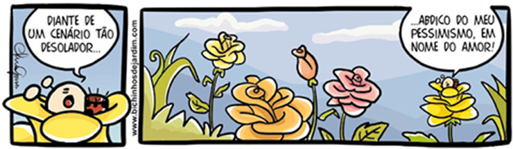
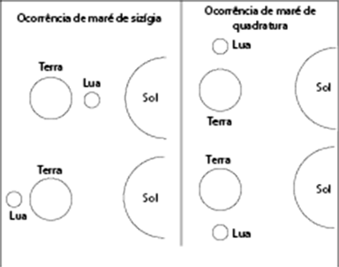
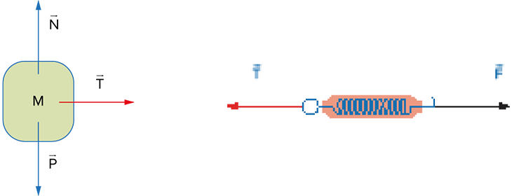
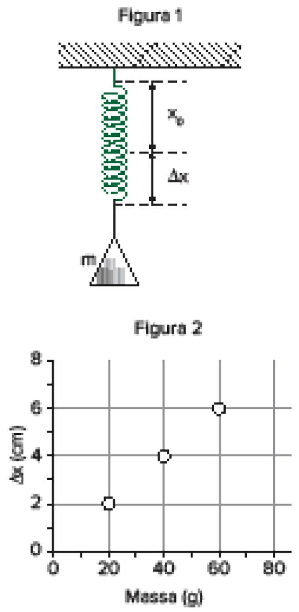
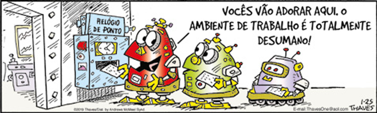
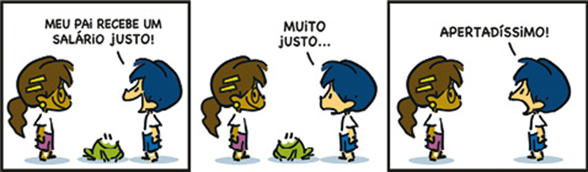
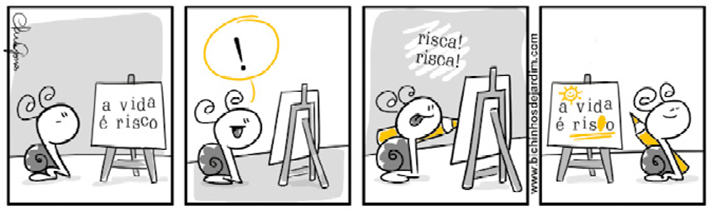
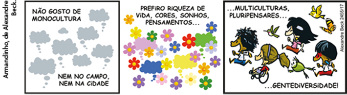

Obra artística que articula fotografia e ilustração.
image by Ben Heine - www.benheine.com © 2019
No cotidiano, quando conversamos com alguém ou escrevemos um texto para amigos ou pessoas com quem desfrutamos uma relação mais íntima, em geral não paramos para refletir sobre a maneira como selecionamos e combinamos as palavras. No entanto, entender o mecanismo de funcionamento do sistema da língua é muito importante, pois, por meio desse conhecimento, podemos organizar nosso discurso de modo mais consciente e crítico, sobretudo em situações públicas e mais formais.
Neste capítulo, retomaremos algumas relações sintáticas estudadas anteriormente, referentes à organização do período simples, sempre com foco na leitura e na interpretação de textos, bem como nas estratégias linguísticas que auxiliam a organização da nossa escrita.
Pensando nisso, observe a montagem fotográfica da abertura do capítulo, uma composição criada pelo artista belga Ben Heine, na qual há uma articulação entre duas linguagens: fotografia e ilustração.
- Descreva os elementos imagéticos que organizam a montagem fotográfica e explique o recurso empregado pelo artista nessa composição.
- Relacione a articulação visual empregada na imagem e os tipos de uso que fazemos da linguagem verbal em diferentes atividades humanas para explicar a forma como selecionamos palavras e as combinamos em nossos textos.
- Formule para essa obra artística um título que, em sua opinião, sintetize em um período simples a mensagem transmitida pelo artista.
Neste capítulo, serão abordadas as habilidades EM13LP01, EM13LP02, EM13LP07, EM13LP08.
Vamos observar o texto a seguir. Trata-se de um ícone produzido para a campanha Passaporte Verde, criada em 2008 e intensificada nos Jogos Olímpicos do Rio de Janeiro em 2016.
Imagem utilizada na campanha Passaporte Verde, do Programa das Nações Unidas para o Meio Ambiente.
“Passaporte Verde: Eu cuido do meu destino!”. ONU Brasil, 12 jul. 2014. Disponível em: <www.youtube.com/watch?v=AZPdHdhIvC8>. Acesso em: 27 mar. 2019.
A palavra “destino” é empregada com duplo sentido no ícone da campanha, pois pode se referir a um local turístico ou ao próprio futuro do planeta – e, em uma primeira leitura, ao destino pessoal do leitor do cartaz.
A seleção das palavras e a forma como elas são combinadas na oração são essenciais para incentivar o turismo sustentável. Existe uma lógica estruturante que organiza os enunciados da língua, tornando compreensível uma sequência como Eu cuido do meu destino. Essa lógica estruturante está vinculada a uma finalidade discursiva, que determina as escolhas linguísticas dos interlocutores em situação de interação.
- Reúna-se em grupo e pesquise sobre uma campanha institucional estruturada em uma sentença que promova um jogo de sentido semelhante ao que foi analisado. Para dar prosseguimento à atividade, traga a pesquisa para a próxima aula.
Sujeito e predicado
Verbo: organizador da sentença
A língua é um sistema muito criativo, e, para compreendê-lo, é necessário descrevê-lo seguindo alguns critérios que estabelecem categorias. Por exemplo, em sintaxe, é possível classificar palavras ou expressões conforme a sua combinação com outras palavras. Observe o quadro a seguir.
Passaporte Verde: Eu cuido do meu destino!, YouTube.
As campanhas institucionais, como a Passaporte Verde, podem ser importantes objetos de leitura e de interpretação de texto. Em geral, no Enem e em diferentes vestibulares, há o uso de textos oriundos desse tipo de prática social, como propagandas, prints de vídeos, outdoors, folhetos etc. Assista ao vídeo da campanha analisada e observe a descrição de diferentes comportamentos que constituem boas práticas ligadas ao turismo sustentável, relacionando os usos da língua aos objetivos discursivos do texto.
Disponível em: <https://www.youtube.com/embed/AZPdHdhIvC8>.
| Palavra(s) ou expressão à esquerda do verbo | Verbo | Palavra(s) ou expressão à direita do verbo |
|---|---|---|
| Eu | cuido | do meu destino. |
| Nós | cuidamos | do nosso destino. |
| Paula e Joaquim | cuidam | do seu destino. |
No quadro apresentado, os termos à esquerda são unidades significativas com as quais os verbos estabelecem uma relação de concordância e sobre as quais se fazem declarações. Essa função sintática recebe o nome de sujeito. Já os termos à direita, nesse caso, complementam o sentido do verbo “cuidar”, que exige o uso da preposição “de”. Se o verbo “cuidar” fosse substituído por “preservar”, por exemplo, a preposição não seria necessária. Verbo e complemento (quando necessário) constituem o que a gramática tradicional denomina predicado, ou, conforme estudos linguísticos, sintagma verbal.
Em alguns casos, a concordância verbal não é feita diretamente com o núcleo do sujeito. Com o verbo ser relacionado aos sujeitos tudo, nada, o, isto, isso e aquilo, ela pode se dar com o predicativo:
Tudo o que eu quero são férias sossegadas.
Se o sujeito indicar quantidade ou medida e for seguido de: pouco, muito, menos de, mais de, o suficiente etc., o verbo fica sempre no singular:
Mil litros de água é o suficiente para encher a piscina.
E há outros casos, que serão estudados adiante.
- A leitura do aluno foi bastante detalhada. (adjunto adnominal)
- A leitura do livro foi bastante detalhada. (complemento nominal)
Sujeito + Verbo + Complemento é o que se denomina ordem direta de uma oração. Neste momento, é importante relembrarmos o princípio da recorrência, que se refere à mesma regra de estruturação linguística aplicada para descrever palavras, sintagmas nominais (que são uma expressão, um bloco de termos como: “A menina inteligente”) e sentenças. Isso significa que o mesmo princípio estruturante organiza a lógica da língua, ainda que, em alguns sintagmas e sentenças, a ordem dos termos seja invertida. Observe o quadro a seguir:
| Elemento(s) à esquerda | Núcleo | Elemento(s) à direita | |
|---|---|---|---|
| Palavra | Prefixo | Radical | Sufixo |
| Sintagma nominal | Artigos, pronomes demonstrativos, pronomes possessivos, numerais | Substantivo ou pronome pessoal | Adjetivo, locução adjetiva, oração adjetiva |
| Sentença | Sujeito | Verbo | Complemento |
Há um núcleo e elementos que se dispõem à esquerda e à direita. Contudo, não são somente a ordem e a posição que determinam a função sintática, mas também as relações entre os termos (concordância, complementaridade, núcleo nominal, núcleo verbal). Por isso, como foi dito, a ordem direta não é a única maneira de organizar uma sentença.
Tipos de sujeito
Já recordamos que o verbo, geralmente, estabelece uma relação de concordância com o sujeito. Assim, em situações formais de uso da língua, é importante saber identificar o sujeito de uma sentença. Observe a tirinha:
Tirinha da série conhecida como Bichinhos de jardim.
Clara Gomes - www.bichinhosdejardim.com
Com base na sentença original presente na tirinha, vamos refletir sobre algumas possibilidades de uso do termo sujeito. Considere as mudanças estruturais e semânticas nas orações apresentadas no quadro a seguir.
| Sujeito determinado | VERBO | COMPLEMENTO | |
|---|---|---|---|
| Simples | Eu | abdico | do meu pessimismo. |
| Nós | abdicamos | do nosso pessimismo. | |
| Joana | abdica | do seu pessimismo. | |
| Meus amigos queridos | abdicam | do seu pessimismo. | |
| Desinencial ou elíptico | ___ | Abdico | do meu pessimismo. |
| ___ | Abdicamos | do nosso pessimismo. | |
| Composto | Joana e Joaquim | abdicam | do seu pessimismo. |
| Joana e eu | abdicamos | do nosso pessimismo. |
O sujeito simples apresenta um núcleo nominal relacionado ao verbo, como se observa com os termos “eu”, “nós” e “Joana” no quadro anterior. Em “meus amigos queridos”, embora haja mais de uma palavra formando o sujeito, o núcleo é apenas o substantivo “amigos”, a quem o verbo se refere.
Note que, ao se omitirem os pronomes pessoais “eu” e “nós”, o sujeito torna-se elíptico ou desinencial (também chamado de oculto), sendo identificado pela terminação verbal.
Já o sujeito composto é formado por dois ou mais núcleos relacionados ao verbo. Nesse caso, a declaração que se faz no predicado relaciona-se a dois nomes: “Joana” e “Joaquim” ou “Joana” e “eu”, conforme os exemplos.
Também construímos frases com o chamado sujeito indeterminado, com verbo na terceira pessoa do plural, sem referente anterior, quando desconhecemos quem executa uma ação: Abdicaram do pessimismo. Outra forma possível é manter o verbo na terceira pessoa do singular e acrescentar a partícula se: Abdica-se do pessimismo.
Por fim, há orações que não têm sujeito, conhecidas como oração sem sujeito ou sujeito inexistente. São construídas com:
-
Verbos que indicam fenômeno da natureza: chover, anoitecer, ventar etc.
Ex.: Choveu muito! -
Verbo haver com sentido de existir.
Ex.: Há desafios em seu novo trabalho. -
Verbos fazer e haver indicando tempo decorrido.
Ex.: Faz tempo que estou na fila. -
Verbos ser e estar indicando tempo.
Ex.: Está tarde!
Predicado e transitividade
A classificação do predicado está relacionada ao tipo de verbo que organiza a sentença. Se for um verbo significativo ou nocional, ou seja, pleno de sentido, o predicado será verbal, pois seu núcleo informacional é o próprio verbo. Caso a sentença apresente um verbo de ligação, o predicado será nominal, pois o núcleo informacional será o predicativo do sujeito, termo que se refere ao sujeito e é conectado a ele por meio de um verbo de ligação ou de estado.
Observe como isso se estrutura em dois títulos jornalísticos:
Governo do Estado do Maranhão, 26 mar. 2015. Disponível em: <www.ma.gov.br/agenciadenoticias/noticias/governo-discute-acessibilidade-de-pracas-esportivas>. Acesso em: 27 mar. 2019.
- Discute: verbo significativo núcleo do predicado verbal
O Globo, 29 jan. 2017. Disponível em: <https://oglobo.globo.com/sociedade/apesar-de-leis-acessibilidade-nao-realidade-em-muitos-condominios-20836246>. Acesso em: 27 mar. 2019.
- Discute: verbo significativo núcleo do predicado verbal
- É: verbo de ligação
- Realidade: predicativo do sujeito núcleo do predicado nominal
Também há predicados com dois núcleos informacionais: um verbo significativo e um predicativo do sujeito ou do objeto. Nesse caso, temos um predicado verbonominal. Observe o título jornalístico a seguir:
Ministério do Planejamento, Desenvolvimento e Gestão, 7 jul. 2015. Disponível em: <www.planejamento.gov.br/assuntos/logistica-e-tecnologia-da-informacao/noticias/estatuto-da-pessoa-com-deficiencia-torna-acessibilidade-digital-obrigatoria>. Acesso em: 27 mar. 2019.
- Torna: verbo significativo
- Obrigatória: predicativo do objeto
- Realidade: predicativo do sujeito núcleo do predicado nominal
Esse título está organizado a partir de duas ideias:
Estatuto torna acessibilidade digital + Acessibilidade digital será obrigatória =
Estatuto torna acessibilidade digital obrigatória
Retomaremos o conceito de predicativo mais adiante.
Complemento nominal
Transitividade e complemento verbal
Nos predicados verbais, os verbos significativos determinam a presença ou não de complementos verbais, assim como o uso ou não de preposição. Isso se deve à transitividade verbal. Na tirinha a seguir, por exemplo, todos os verbos são intransitivos, ou seja, não precisam de complemento verbal, pois o sentido que atribuem ao sujeito é completo.
Tirinha da série Devaneios com Sigmund e Freud.
YORHÁN ARAÚJO
Quando precisa de complemento, o verbo é classificado como transitivo, pois não atribui sentido pleno ao sujeito. O verbo transitivo direto não exige preposição, e seu complemento é um objeto direto. O verbo transitivo indireto exige um complemento intermediado pelo uso de uma preposição, sendo um objeto indireto. Observe o quadro:
| Sintagma verbal ou predicado | ||
|---|---|---|
| Sujeito | Verbo | Complemento verbal |
| Eu | aprecio | sua paciência. |
| Nós | gostamos | de sua paciência. |
As formas verbais “aprecio” e “gostamos” são núcleos do predicado verbal, porém precisam de um complemento para que o sentido da sentença seja pleno. “Apreciar” não exige preposição, ligando-se diretamente à expressão “sua paciência”, objeto direto. Já “gostar” requer o emprego de uma preposição que introduz o objeto indireto “de sua paciência”.
- Verbo transitivo direto Apreciar (algo ou alguém)
- Verbo transitivo indireto Gostar (de algo ou de alguém)
Há ainda os verbos que exigem dois complementos, objeto direto e objeto indireto.
| Sintagma verbal ou predicado | |||
|---|---|---|---|
| Sujeito | Verbo | Complementos verbais | |
| Ela | agradeceu | a paciência. | ao amigo. |
O verbo “agradecer”, nesse caso, classifica-se como verbo transitivo direto e indireto e apresenta como complementos o objeto direto “a paciência” e o objeto indireto “ao amigo”.
- Verbo transitivo direto e indireto Agradecer (algo/a alguém)
Em algumas situações, por questões de estilo e construção de sentido que visam à ênfase de uma ideia ou expressão, o objeto direto pode vir preposicionado. Nesse caso, geralmente, é empregada a preposição “a”. Esse recurso é muito comum em sentenças construídas na esfera religiosa: Amo a Deus;Louvo ao Senhor. “Amar” e “louvar” são verbos transitivos diretos, mas, nesse contexto de uso, é frequente o emprego da preposição “a” com o objeto direto.
Há ainda os complementos verbais pleonásticos, que se referem a uma repetição do objeto direto ou indireto com a finalidade de dar ênfase a uma determinada ideia ou expressão.
- Objeto direto pleonástico
Leitura, considero-a imprescindível. - Objeto indireto pleonástico
À minha família, dedico-lhe todo meu amor.
No primeiro exemplo, o objeto direto “leitura” é repetido por meio do pronome pessoal átono “a”, e, no segundo, o objeto indireto “para minha família” é reiterado pelo pronome pessoal átono “lhe”.
Adjunto adverbial
No título Como eu era antes de você, nome de um livro e de um filme de sucesso lançados há alguns anos, a expressão “antes de você” expressa circunstância de tempo, contribuindo para que o leitor compreenda a ideia de anterioridade em relação ao verbo. Essa expressão atua na sentença como um adjunto adverbial.
Os adjuntos adverbiais se classificam de acordo com a circunstância expressa; contudo, nos contextos reais de uso da língua, há uma diversidade de valores semânticos que podem ser atribuídos a eles. Vejamos alguns exemplos:
Lugar Há dúvidas em vários setores da empresa.
Negação Eu nunca gostei de sua atitude.
Dúvida Talvez possamos tirar férias.
Tempo Todos os dias, João chega atrasado.
Modo Li as instruções lentamente.
Intensidade Elaboramos uma pauta bem detalhada.
Termos ligados ao nome
Complemento nominal
Assim como há verbos que necessitam de complemento verbal, há nomes que também não apresentam sentido pleno, exigindo, portanto, complemento nominal. Leia uma manchete jornalística publicada noJornal Novo Hamburgo (NH), em 7 de fevereiro de 2019.
Delegada da Mulher faz alerta contra denúncias falsas
No RS, 60% das notificações de estupro não têm confirmação. Em Novo Hamburgo, titular da Deam, Raquel Peixoto, reforça a importância de denunciar, mas avisa: mentir é crime. Página 34
Jornal NH., Disponível em: <http://digital.jornalnh.com.br/index.php?cd_prded=&dtEdcaoIni=07%2F02%2F2019&dtEdcaoFim=07%2F02%2F2019&search=search>. Acesso em: 27 mar. 2019.
O substantivo “alerta”, nesse contexto de uso, exige o emprego do complemento nominal “contra denúncias falsas”. O complemento nominal é sempre introduzido por preposição e representa o destinatário da ideia indicada por um substantivo abstrato, adjetivo ou advérbio.
Predicativo
Tirinha Frank & Ernest, de Bob Thaves.
Frank & Ernest, Bob Thaves © 2019 Thaves / Dist. by Andrews McMeel Syndication
Na tirinha, o humor se constrói com o predicativo do sujeito, “totalmente desumano”, que passa a sugerir algo positivo, já que, no contexto de uso representado na história, ser desumano é bom para as personagens-robôs. Há predicativo quando o predicado é nominal ou verbonominal, representando um núcleo informacional na sentença, ou seja, que carrega uma informação importante sobre o sujeito ou sobre o objeto.
O ambiente de trabalho é tranquilo.
- Tranquilo – predicativo do sujeito “O ambiente de trabalho”
O coordenador recebeu entusiasmado as considerações dos empregados.
- Entusiasmado – predicativo do sujeito “O coordenador”
Os empregados consideraram as medidas da empresa importantes.
- Importantes – predicativo do objeto “as medidas da empresa”
Como se pode observar nos exemplos, o predicativo do sujeito é uma característica atribuída ao sujeito; e o predicativo do objeto, ao objeto.
Adjunto adnominal
Tirinha da série Armandinho.
Armandinho, de Alexandre Beck.
Na tirinha, o cartunista cria um efeito de humor baseado no duplo sentido do adjetivo “justo”, que, primeiramente, é entendido como legítimo e adequado e, depois, como restrito em relação à situação financeira.
Os termos “justo” e “apertadíssimo” qualificam o substantivo “salário”, atuando como adjuntos adnominais. Observe, tomando por base a sentença presente na tirinha, todos os adjuntos adnominais e os substantivos aos quais se referem.
| Adjunto adnominal | Substantivo | Verbo | Adjunto adnominal | Substantivo | Adjunto adnominal |
|---|---|---|---|---|---|
| Meu | pai | recebe | um | salário | justo! |
No segundo quadrinho da tirinha do Armandinho, o adjunto adnominal justo é modificado pelo adjunto adverbial muito, que expressa circunstância de intensidade. Portanto, o advérbio – que estudaremos em outro momento – não é um termo que modifica apenas o verbo, mas também adjetivos e outros advérbios. Sua etimologia latina informa que ele é um termo que “está ao lado” (ad) do verbo (verbum), que, nesse caso, tem o significado de palavra. Outra característica importante: o advérbio não é flexionado em número nem em gênero.
O adjunto adnominal é um termo relacionado ao substantivo com a finalidade de delimitar, especificar ou caracterizar o seu sentido. Pronomes, artigos, numerais e adjetivos podem atuar nessa função.
No próximo capítulo, trataremos da distinção entre complemento nominal e adjunto adnominal.
Aposto
Leia o poema de saudação ao Sol, escrito por Olavo Bilac.
O Sol
Salve, sol glorioso! Ao teu clarão fecundo,
A natureza canta e se extasia o mundo.
Que tristeza, que dó, quando desapareces!
Vens, e a terra estragada e feia reverdeces;
Abres com o teu calor as sebes perfumadas;
Dás flores ao verdor das moitas orvalhadas;
Os ninhos aquecendo, as gargantas das aves
Dás gorjeios de amor, e harmonias suaves;
E, cintilando sobre os tufos de verdura,
Em cada ramo põe uma fruta madura.
A noite é como a morte; o dia é como a vida.
Ó Sol, quando te vais, a alma vaga perdida...
Os pensamentos mais são os filhos da treva:
Fogem, quando a brilhar, no horizonte se eleva
O Sol, pai do trabalho, o Sol, pai da alegria...
Salve, anúncio da Vida, e portador do Dia!
BILAC, Olavo. “O Sol”. Poesias Infantis. [s.l.]: Atlântico Press, 2019.
No penúltimo verso do poema, há expressões que se relacionam ao substantivo “sol” com a finalidade de explicá-lo. Trata-se do emprego de dois apostos.
“O Sol, pai do trabalho, o Sol, pai da alegria...”
O aposto restringe o valor semântico de um núcleo nominal (substantivo, pronome ou termo com função equivalente), podendo ser:
- enumerativo: Conhecemos vários países: Bélgica, Rússia, Austrália, Chile, Vietnã e outros.
- explicativo: Pedro, meu filho, virá me visitar em breve.
- especificativo: Moro na Rua 15 de Novembro.
- recapitulativo: Tempo, idade, afastamento, nada separa verdadeiros amigos.
- comparativo: Seus olhos, grandes jabuticabas, são vívidos e impressionantes.
É preciso diferenciar o aposto de outro termo da oração, o vocativo, considerando uma característica importante: o vocativo é um termo independente, ou seja, não estabelece relação sintática com os elementos da oração. Sua função é interpelar a pessoa com quem se fala. No poema de Bilac, há emprego de vocativos: “sol glorioso”, “ó Sol”, “anúncio da Vida”, “portador do Dia!”.
Texto para as questões de 1 a 5.
Clara Gomes - www.bichinhosdejardim.com
1
Identifique os verbos que organizam as sentenças empregadas na tirinha.
2
Descreva os termos que exercem função de sujeito e predicado nas sentenças que você identificou.
3
Explique os possíveis sentidos da palavra “risco” no primeiro quadrinho.
4
No último quadrinho, essa palavra é trocada. Interprete o sentido construído pela seleção e pela substituição de uma palavra por outra.
5
Há uma sintaxe visual que se articula à linguagem verbal. Explique de que forma os elementos visuais contribuem para a construção de sentido na tirinha.
Texto para as questões de 6 a 11.
O anúncio publicitário a seguir foi produzido para uma campanha do Greenpeace, uma organização internacional sem fins lucrativos voltada à proteção do meio ambiente.
6
Observe a organização verbovisual do anúncio e descreva como se articula sua forma composicional.
7
Na parte superior, é possível visualizar algumas sentenças.
- Que termo sintático está ausente na estrutura verbal?
- Que elemento visual atua com essa função sintática?
8
Explique qual efeito de sentido a articulação entre o visual e o verbal confere ao anúncio.
9
Considerando a autoria do anúncio e a análise realizada, interprete e especifique a finalidade discursiva que mobilizou a produção desse texto.
10
Relacione a finalidade discursiva do anúncio à sentença “O transporte não motorizado pode ser tão atrativo quanto um carro” e interprete:
- A quem o anunciante se dirige?
- O que fica implícito nessa sentença quando lemos a seguinte frase: “É só a gente cobrar”?
11
Considerando a mesma sentença:
- Identifique o sujeito e seu núcleo e classifique-o.
- No contexto da propaganda, a que outro termo esse sujeito se refere?
Texto para as questões de 12 a 17.
O anúncio institucional a seguir foi elaborado pelo Instituto Akatu para uma campanha em prol da economia de água.
Imagem de campanha para consumo consciente da água.
Instituto Akatu
12
Identifique e classifique o predicado de cada sentença que compõe o anúncio.
13
Analise a sentença em destaque e verifique se ela está em ordem direta. Organize suas conclusões.
14
Por que, provavelmente, o anunciante optou por essa disposição dos termos da sentença?
15
A partir do termo que atua como sujeito na sentença em destaque, explique a relação de concordância estabelecida com o verbo.
16
Esquematize uma sentença com predicado verbonominal considerando as ideias veiculadas no anúncio.
17
Como leitor, de que forma você avalia o anúncio? Considera que esse tipo de campanha pode, de fato, exercer um efeito prático e transformador na sociedade? Justifique.
Texto para as questões de18 a 20.
Armandinho, de Alexandre Beck.
18
Analise e classifique sintaticamente o verbo e o complemento verbal da sentença dos dois primeiros quadrinhos.
19
Observe o primeiro e o último quadrinho. Há uma oposição de sentido estabelecida entre os complementos verbais.
- Explique em que consiste essa oposição.
- Interprete de que forma os elementos visuais reforçam a oposição de sentido construída.
20
Escreva um período simples organizado com o verbo “preferir”, no qual os dois termos que se opõem, trabalhados no item b da questão anterior, possam ser complementos verbais do mesmo verbo.
21
Leia a frase a seguir e, depois, responda ao que se pede:
Juntos, a gente muda o mundo.
- Analise sintaticamente a sentença que compõe a oração.
- Observando a análise da sentença, levante hipóteses sobre a concordância do termo “juntos” e o uso da expressão “a gente”.
22
Leia a charge a seguir.
Benett
- Analise sintaticamente os verbos e complementos verbais da seguinte sentença:
Alguém filmou o nascer do sol inteiro e postou no YouTube. - Interprete a crítica veiculada pela charge.
23
Fuvest 2021 Uma última gargalhada estrondosa. E depois, o silêncio. O palhaço jazia imóvel no chão. Mas seu rosto continua sorrindo, para sempre. Porque a carreira original do Coringa era para durar apenas 30 páginas. O tempo de envenenar Gotham, sequestrar Robin, enfiar um par de sopapos no Homem-Morcego e disparar o primeiro “vou te matar” da sua relação. Na briga final do Batman nº 1, o “horripilante bufão” sofria um final digno de sua desumana ironia: ao tropeçar, cravava sua própria adaga no peito. Assim decidiram e desenharam seus pais, os artistas Bill Finger, Bob Kane e Jerry Robinson. Entretanto, o criminoso mostrou, já em sua primeira aventura, um enorme talento para se rebelar contra a ordem estabelecida. Seu carisma seduziu a editora DC Comics, que impôs o acréscimo de um quadrinho. Já dentro da ambulância, vinha à tona “um dado desconcertante”. E então um médico sentenciava: “Continua vivo. E vai sobreviver!”.
Tommaso Koch. “O Coringa completa 80 anos e na Espanha ganha duas HQs, que inspiram debates filosóficos sobre a liberdade”. El País. Junho/2020.
Em “Seu carisma seduziu a editora DC Comics, que impôs o acréscimo de um quadrinho.” (L. 15 e 16), o vocábulo “que” possui a mesma função sintática desempenhada no texto por
- “imóvel” (L. 2).
- “Robin” (L. 5).
- “seus pais” (L. 11).
- “se” (L. 14).
- vivo” (L. 18).
Leia o poema de Fernando Pessoa para responder às questões 1 e 2.
Cruz na porta da tabacaria!
Ao diabo o bem-’star que trazia.
Desde ontem a cidade mudou.
Quem era? Ora, era quem eu via.
Todos os dias o via. Estou
Agora sem essa monotonia.
Desde ontem a cidade mudou.
Ele era o dono da tabacaria.
Um ponto de referência de quem sou.
Eu passava ali de noite e de dia.
Desde ontem a cidade mudou.
Meu coração tem pouca alegria,
E isto diz que é morte aquilo onde estou.
Horror fechado da tabacaria!
Desde ontem a cidade mudou.
Mas ao menos a ele alguém o via,
Ele era fixo, eu, o que vou,
Se morrer, não falto, e ninguém diria:
Desde ontem a cidade mudou.
(Obra poética, 1997.)
1
Unifesp 2021
Sempre que haja necessidade expressiva de reforço, de ênfase, pode o objeto direto vir repetido. Essa reiteração recebe o nome de objeto direto pleonástico.
(Adriano da Gama Kury. Novas lições de análise sintática, 1997. Adaptado.)
O eu lírico lança mão desse recurso expressivo no verso
- “Todos os dias o via. Estou” (2a estrofe)
- “E isto diz que é morte aquilo onde estou.” (4a estrofe)
- “Ele era fixo, eu, o que vou,” (5a estrofe)
- “Mas ao menos a ele alguém o via,” (5a estrofe)
- “Ao diabo o bem-’star que trazia.” (1a estrofe)
2
Unifesp 2021 O eu lírico recorre a um sinal de pontua-ção para indicar a supressão de um verbo em
- “Ao diabo o bem-’star que trazia.” (1a estrofe)
- “Todos os dias o via. Estou” (2a estrofe)
- “Quem era? Ora, era quem eu via.” (2a estrofe)
- “Se morrer, não falto, e ninguém diria:” (5a estrofe)
- “Ele era fixo, eu, o que vou,” (5a estrofe)
3
IFBA 2016 Leia a anedota de Ziraldo e indique a opção que corresponde aos tipos de predicado presentes na fala atribuída à professora, obedecendo à ordem em que eles aparecem no texto.
A inspetora da escola visitando todas as turmas quando o Juquinha levou um tombo no corredor e berrou todos os palavrões que conhecia.
Escandalizada, a inspetora perguntou:
– Onde essa criança aprendeu tanto palavrão?
E a professora, muito sem graça:
– Aprendeu nada! Isso é dom natural.
Fonte: Ziraldo. Mais anedotinhas do Bichinho da Maçã. 10. ed. São Paulo: Melhoramentos, 1993. p. 10-11
- Nominal e verbal.
- Verbal e nominal.
- Verbal e verbonominal.
- Verbonominal e verbal.
- Verbonominal e nominal.
4
Unesp (Adapt.)
Pensar em nada
A maravilha da corrida: basta colocar um pé na frente do outro.
Assim como numa família de atletas um garoto deve encontrar certa resistência ao começar a fumar, fui motivo de piada entre alguns parentes – quase todos intelectuais – quando souberam que eu estava correndo. “O esporte é bom pra gente”, disse minha avó, num almoço de domingo. “Fortalece o corpo e emburrece a mente.”
Hoje, dez anos depois daquele almoço, tenho certeza de que ela estava certa. O esporte emburrece a mente e o mais emburrecedor de todos os esportes inventados pelo homem é, sem sombra de dúvida, a corrida – por isso que eu gosto tanto.
Antes que o primeiro corredor indignado atire um tênis em minha direção (número 42, pisada pronada, por favor), explico-me. [...] Quando falo em emburrecer, refiro-me ao delicioso momento do exercício, àquela hora em que você se esquece da infiltração no teto do banheiro, do enrosco na planilha do Almeidinha, da extração do siso na próxima semana, do pé na bunda que levou da Marilu, do frio que entra pela fresta da janela e do aquecimento global que pode acabar com tudo de uma vez. [...]
A consciência é, de certa forma, um tormento. Penso, logo existo. Existo, logo me incomodo. A gravidade nos pesa sobre os ombros. Os anos agarram-se à nossa pele. A morte nos espreita adiante e quando uma voz feminina e desconhecida surge em nosso celular, não costuma ser a última da capa da Playboy, perguntando se temos programa para sábado, mas a mocinha do cartão de crédito avisando que a conta do cartão “encontra-se em aberto há 14 dias” e querendo saber se “há previsão de pagamento”.
Quando estamos correndo, não há previsão de pagamento. Não há previsão de nada porque passado e futuro foram anulados. [...]
Antonio Prata. Pensar em nada. Runner’s World, n.° 7, São Paulo: Editora Abril, maio/2009.
O esporte é bom pra gente, fortalece o corpo e emburrece A MENTE. – Antes que o primeiro corredor indignado atire UM TÊNIS em minha direção [...] – Quando estamos correndo, não há PREVISÃO DE PAGAMENTO.
Os termos grafados com letras maiúsculas nas passagens acima, extraídas do texto apresentado, identificam-se pelo fato de exercerem a mesma função sintática nas orações de que fazem parte. Indique essa função:
- Sujeito.
- Predicativo do sujeito.
- Predicativo do objeto.
- Objeto direto.
- Complemento nominal.
5
Unifesp 2015 Leia o texto para responder à questão.
[...]
De resto, o meu processo foi rápido. Oh! o caso parecia bem claro... Eu nem negava nem confessava. Mas quem cala consente... E todas as simpatias estavam do meu lado.
O crime era, como devem ter dito os jornais do tempo, um “crime passional”. Cherchez la femme*. Depois, a vítima, um poeta – um artista. A mulher romantizara-se desaparecendo. Eu era um herói, no fim de contas. E um herói com seus laivos de mistério, o que mais me aureolava. Por tudo isso, independentemente do belo discurso de defesa, o júri concedeu-me circunstâncias atenuantes. E a minha pena foi curta.
Ah! foi bem curta – sobretudo para mim... Esses dez anos esvoaram-se-me como dez meses. É que, em realidade, as horas não podem mais ter ação sobre aqueles que viveram um instante que focou toda a sua vida. Atingido o sofrimento máximo, nada já nos faz sofrer. Vibradas as sensações máximas, nada já nos fará oscilar. Simplesmente, este momento culminante raras são as criaturas que o vivem. As que o viveram ou são, como eu, os mortos-vivos, ou – apenas – os desencantados que, muita vez, acabam no suicídio.
Mário de Sá-Carneiro. A confissão de Lúcio, 2011.
* Cherchez la femme: Procurem a mulher.
Quando se quer chamar atenção para o Objeto Direto que precede o verbo, costuma-se repeti-lo. É o que se chama Objeto Direto Pleonástico, em cuja constituição entra sempre um pronome pessoal átono.
Celso Cunha e Lindley Cintra. Nova gramática do português contemporâneo, 2000.
Verifica-se a ocorrência de objeto direto pleonástico em:
- “As que o viveram ou são, como eu, os mortos-vivos, ou – apenas – os desencantados”
- “Esses dez anos esvoaram-se-me como dez meses.”
- “Por tudo isso, independentemente do belo discurso de defesa, o júri concedeu-me circunstâncias atenuantes.”
- “Simplesmente, este momento culminante raras são as criaturas que o vivem.”
- “Atingido o sofrimento máximo, nada já nos faz sofrer.”
1
Efomm-RJ 2016 (Adapt.)
Felicidade clandestina
Clarice Lispector
Ela era gorda, baixa, sardenta e de cabelos excessivamente crespos, meio arruivados. Tinha um busto enorme, enquanto nós todas ainda éramos achatadas. Como se não bastasse, enchia os dois bolsos da blusa, por cima do busto, com balas. Mas possuía o que qualquer criança devoradora de histórias gostaria de ter: um pai dono de livraria.
[...]
Mas que talento tinha para a crueldade. Ela toda era pura vingança, chupando balas com barulho. Como essa menina devia nos odiar, nós que éramos imperdoavelmente bonitinhas, esguias, altinhas, de cabelos livres. Comigo exerceu com calma ferocidade o seu sadismo. Na minha ânsia de ler, eu nem notava as humilhações a que ela me submetia: continuava a implorar-lhe emprestados os livros que ela não lia.
Até que veio para ela o magno dia de começar a exercer sobre mim uma tortura chinesa. Como casualmente, informou-me que possuía As reinações de Narizinho, de Monteiro Lobato.
Era um livro grosso, meu Deus, era um livro para se ficar vivendo com ele, comendo-o, dormindo-o. E completamente acima de minhas posses. Disse-me que eu passasse pela sua casa no dia seguinte e que ela o emprestaria.
[...]
No dia seguinte fui à sua casa, literalmente correndo. Ela não morava num sobrado como eu, e sim numa casa. Não me mandou entrar. Olhando bem para meus olhos, disse-me que havia emprestado o livro a outra menina, e que eu voltasse no dia seguinte para buscá-lo. Boquiaberta, saí devagar, mas em breve a esperança de novo me tomava toda e eu recomeçava na rua a andar pulando, que era o meu modo estranho de andar pelas ruas de Recife. Dessa vez nem caí: guiava-me a promessa do livro, o dia seguinte viria, os dias seguintes seriam mais tarde a minha vida inteira, o amor pelo mundo me esperava, andei pulando pelas ruas como sempre e não caí nenhuma vez.
Mas não ficou simplesmente nisso. O plano secreto da filha do dono de livraria era tranquilo e diabólico. No dia seguinte lá estava eu à porta de sua casa, com um sorriso e o coração batendo. Para ouvir a resposta calma: o livro ainda não estava em seu poder, que eu voltasse no dia seguinte. Mal sabia eu como mais tarde, no decorrer da vida, o drama do “dia seguinte” com ela ia se repetir com meu coração batendo.
E assim continuou. Quanto tempo? Não sei. Ela sabia que era tempo indefinido, enquanto o fel não escorresse todo de seu corpo grosso. Eu já começara a adivinhar que ela me escolhera para eu sofrer, às vezes adivinho. Mas, adivinhando-me mesmo, às vezes aceito: como se quem quer me fazer sofrer esteja precisando danadamente que eu sofra.
Quanto tempo? Eu ia diariamente à sua casa, sem faltar um dia sequer. Às vezes ela dizia: pois o livro esteve comigo ontem de tarde, mas você só veio de manhã, de modo que o emprestei a outra menina. E eu, que não era dada a olheiras, sentia as olheiras se cavando sob os meus olhos espantados.
Até que um dia, quando eu estava à porta de sua casa, ouvindo humilde e silenciosa a sua recusa, apareceu sua mãe. [...]
Pediu explicações a nós duas. Houve uma confusão silenciosa, entrecortada de palavras pouco elucidativas.
[...]
Ela nos espiava em silêncio: a potência de perversidade de sua filha desconhecida e a menina loura em pé à porta, exausta, ao vento das ruas de Recife. Foi então que, finalmente se refazendo, disse firme e calma para a filha: você vai emprestar o livro agora mesmo. [...]
Com base no texto lido, responda à questão a seguir.
Nas passagens que se seguem, as expressões sublinhadas cumprem a função de predicativo. Assinale a EXCEÇÃO.
- Para ouvir a resposta calma: o livro ainda não estava em seu poder (...)
- Boquiaberta, saí devagar, mas em breve a esperança de novo me tomava toda (...)
- O plano secreto da filha do dono de livraria era tranquilo e diabólico.
- (...) quando eu estava à porta de sua casa, ouvindo humilde e silenciosa a sua recusa (...)
- Foi então que, finalmente se refazendo, dissefirme e calma para a filha (...)
1
Col. Naval-RJ 2015 (Adapt.) Quando se pergunta à população brasileira, em uma pesquisa de opinião, qual seria o problema fundamental do Brasil, a maioria indica a precariedade da educação. Os entrevistados costumam apontar que o sistema educacional brasileiro não é capaz de preparar os jovens para a compreensão de textos simples, elaboração de cálculos aritméticos de operações básicas, conhecimento elementar de física e química, e outros fornecidos pelas escolas fundamentais.
[...]
Certa vez, participava de uma reunião de pais e professores em uma escola privada brasileira de destaque e notei que muitos pais expressavam o desejo de ter bons professores, salas de aula com poucos alunos, mas não se sentiam responsáveis para participarem ativamente das atividades educacionais, inclusive custeando os seus serviços. Se os pais não conseguiam entender que esta aritmética não fecha e que a sua aspiração estaria no campo do milagre, parece difícil que consigam transmitir aos seus filhos o mínimo de educação.
[...]
Que esta educação seja prioritária e ajude a resolver outros problemas de uma sociedade como a brasileira parece lógico. No entanto, não se pode pensar que a sua deficiência depende somente das autoridades. [...]
Para que haja uma mudança neste quadro é preciso que a sociedade como um todo esteja convencida de que todos precisam contribuir para tanto, inclusive elegendo representantes que partilhem desta convicção e não estejam pensando somente nos seus benefícios pessoais.
YOKOTA, Paulo. Os problemas da educação no Brasil. Em <http://www.cartacapital.com.br/educacao/os-problemas-da-educacao-no-brasil-657.html>. Adaptado.
Assinale a opção que contém o verbo com a mesma predicação do que está em destaque em “Para que haja uma mudança neste quadro [...].” (4º §).
- Alguns professores buscam respostas eficazes em modelos tradicionais de educação.
- Com a chegada da internet ao Brasil, muitas pessoas ficaram deslumbradas ao extremo.
- Nem sempre os alunos respondem a expectativas desejáveis nos exames nacionais.
- Vocês, ultimamente, andam bastante pensativos e introspectivos.
- O conhecimento traz a homens e mulheres bastantes conhecimentos.
8
UFPR 2016 Leia, atentamente, o seguinte poema:
Que pode uma criatura senão,
entre criaturas, amar?
amar e esquecer,
amar e malamar,
amar, desamar, amar?
sempre, e até de olhos vidrados, amar?
Que pode, pergunto, o ser amoroso,
sozinho, em rotação universal, senão
rodar também, e amar?
amar o que o mar traz à praia,
e o que ele sepulta, e o que, na brisa marinha,
é sal, ou precisão de amor, ou simples ânsia?
Amar solenemente as palmas do deserto,
o que é entrega ou adoração expectante,
e amar o inóspito, o áspero,
um vaso sem flor, um chão de ferro,
e o peito inerte, e a rua vista em sonho, e uma ave
[de rapina.
Este o nosso destino: amor sem conta,
distribuído pelas coisas pérfidas ou nulas,
doação ilimitada a uma completa ingratidão,
e na concha vazia do amor a procura medrosa,
paciente, de mais e mais amor.
Amar a nossa falta mesma de amor, e na secura nossa
amar a água implícita, e o beijo tácito, e a sede infinita.
O poema “Amar” integra a segunda parte, “Notícias Amorosas”, do livro Claro enigma, de Carlos Drummond de Andrade. Sobre esse poema, assinale a alternativa correta.
- As indagações repetitivas, nas duas primeiras estrofes, reiteram a inviabilidade do amor diante de um mundo em que tudo é perecível.
- O poeta estabelece uma intensidade da manifestação do amor com relação ao belo diferente da intensidade do amor dispensado ao grotesco.
- Para acentuar a condição inexorável de amar, o poe-ma enumera coisas que, por sua concretude e delicadeza naturais, justificam o amor que já recebem.
- O poema postula uma condição universal, na qual se fundem o sujeito, a ação praticada e os objetos a que essa ação se dirige.
- A última estrofe é a chave explicativa desse soneto e reitera a ineficácia do amor diante de um mundo caótico e insensível.
9
Fuvest-SP
O samba
À direita do terreiro, adumbra-se* na escuridão um maciço de construções, ao qual às vezes recortam no azul do céu os trêmulos vislumbres das labaredas fustigadas pelo vento.
[...]
É aí o quartel ou quadrado da fazenda, nome que tem um grande pátio cercado de senzalas, às vezes com alpendrada corrida em volta, e um ou dois portões que o fecham como praça d’armas.
Em torno da fogueira, já esbarrondada pelo chão, que ela cobriu de brasido e cinzas, dançam os pretos o samba com um frenesi que toca o delírio. Não se descreve, nem se imagina esse desesperado saracoteio, no qual todo o corpo estremece, pula, sacode, gira, bamboleia, como se quisesse desgrudar-se.
Tudo salta, até os crioulinhos que esperneiam no cangote das mães, ou se enrolam nas saias das raparigas. Os mais taludos viram cambalhotas e pincham à guisa de sapos em roda do terreiro. Um desses corta jaca no espinhaço do pai, negro fornido, que não sabendo mais como desconjuntar-se, atirou consigo ao chão e começou de rabanar como um peixe em seco. [...]
(José de Alencar, Til)
(*) “adumbra-se” = delineia-se, esboça-se.
Na composição do texto, foram usados, reiteradamente,
- sujeitos pospostos;
- termos que intensificam a ideia de movimento;
- verbos no presente histórico.
Está correto o que se indica em
- I, apenas.
- II, apenas.
- III, apenas.
- I e II, apenas.
- I, II e III.